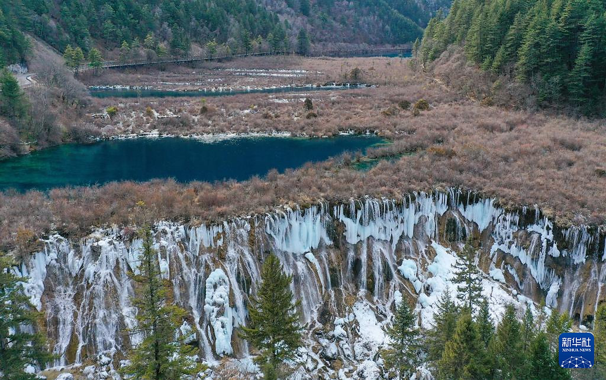
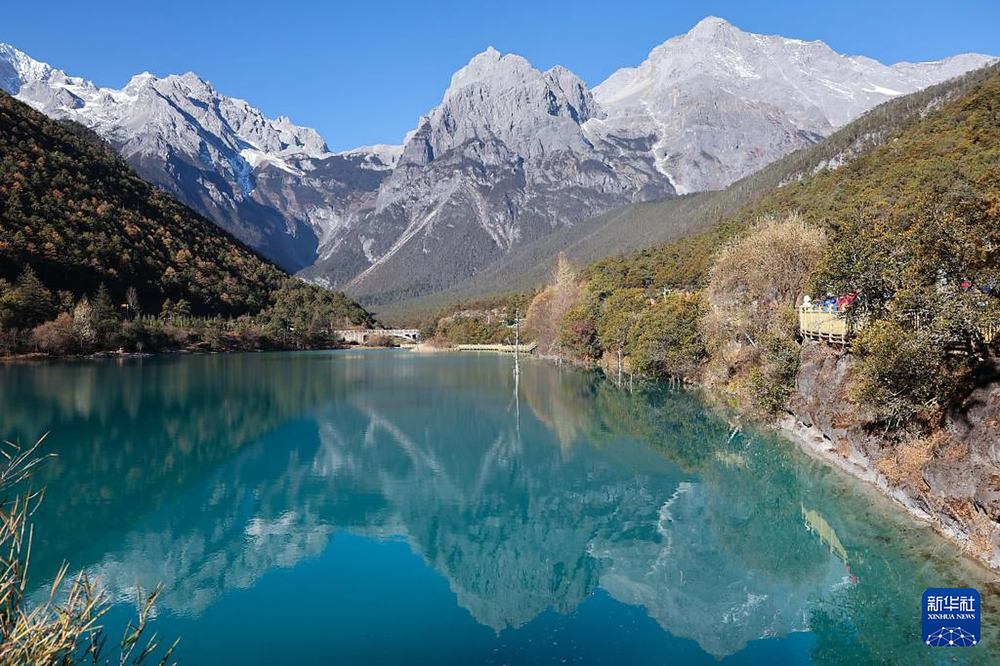
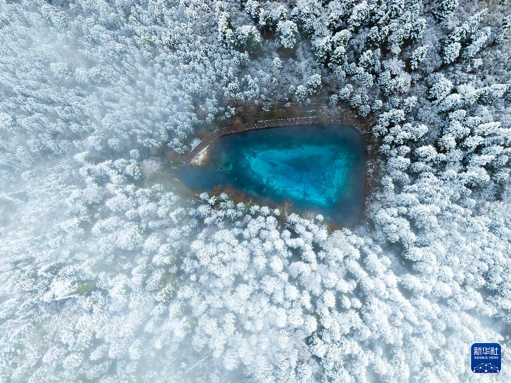

WINTER JOURNEY
从成都出发，不用自己开车。一条去丽江，上玉龙雪山；一条去九寨沟，看冰瀑和蓝冰。
诺日朗冰瀑航拍，2024-01-04
新华社记者 王曦 新华网
阅读
怎么选
九寨沟海拔低，不太担心高反；丽江雪山更震撼。两条都按慢节奏排，都不自驾。同行里如果有人对海拔敏感，每个行程里都写了怎么避开高处。

01 · 四天
住白沙或束河，先适应海拔。要看雪山，就上冰川公园大索道；上面别久留，不舒服就下。
成都飞机或高铁到丽江，住白沙或束河，适应海拔（古城约 2400 米）。
睡到自然醒。束河或白沙骑电动车，也可去玉湖村，远看玉龙雪山。在古城提前买氧气瓶。
一早上玉龙雪山冰川公园大索道（上站 4506 米），上面别久留，不舒服就下。下午蓝月谷。高反过的朋友可在蓝月谷或山下等。
天晴的话，早上看日照金山，返回成都。
同行里有人曾在大理洱海（约 1970 米）就出现高反。出发前问医生，是否可提前用预防药。丽江先在古城适应两天，看状态；上山日他可不坐大索道，在蓝月谷或山下等。
此前按 5 人 3 天估算过，含住宿约 7650–12300 元。这次是 4 天慢版，会多一天住宿和餐饮，出发前按机票和住房再核。没有把 4 天总价再估一遍，以免数字不实。

02 · 三天
坐动车去，住沟口（约 2000 米），看诺日朗冰瀑和蓝冰。坐观光车，累了就歇，不必赶路。
高铁成都东到黄龙九寨（最快约 1 小时 39 分），再换乘直通车约 2 小时到沟口住下。晚上可泡温泉，或看藏羌歌舞。
进沟看诺日朗冰瀑和蓝冰，坐观光车，累了就歇。顺序可参考：上午日则沟，中午诺日朗，下午则查洼沟，最后树正沟。
沟口睡懒觉，返回成都。
出发前问医生，是否可提前用预防药。进沟当天只逛较低的树正沟和诺日朗一带，不去日则沟高处，也不上则查洼沟的长海、五彩池（长海 3101 米、五彩池 3010 米）。
5 人 3 天交通加门票已核约 2740 元，不含住宿和餐饮。直通车约 51 元。淡季票价以上述上季通告为参考，出发前再核官方。